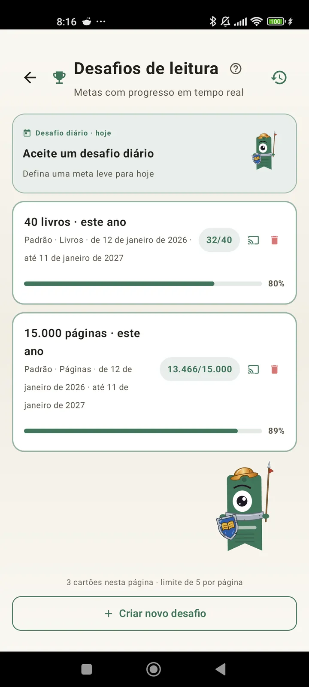

Conheça-se como leitor
Desafios, bingos, widgets e mais recursos para aproveitar ao máximo sua leitura. Novo na 3.7: desafios e widgets de bingo.

Desafios de leitura
Defina metas por páginas, sequências ou gêneros. Até 15 desafios ativos grátis, ilimitados com o Pro. Além de um desafio diário personalizável que não conta para o limite.

Desafio diário
Uma meta nova a cada dia. Cumpra o desafio antes da meia-noite para manter sua sequência.

Bingo de leitura
Dois bingos novos por mês, com casas temáticas. Complete linhas, colunas ou a cartela inteira.

Resumo semanal
Toda segunda-feira, um retrato da sua semana: páginas lidas, tempo total, sequência e como ela se compara à anterior.

Resumo mensal
Quando um mês termina, o Lecturameter faz o resumo: páginas, tempo, livros concluídos, seu ritmo dia a dia e o livro do mês.

Widget de bingo Pro
A cartela de bingo do mês, sempre à vista, com as casas que você completou e as linhas que fechou.

Widget de livro Grátis
Veja o livro que você está lendo direto na tela inicial: capa, título, autor, páginas e porcentagem de progresso, sempre atualizados. Redimensionável para caber onde você quiser.
Sério, mano, o app parece terapia: passei de ler umas páginas por dia para umas 20 páginas por dia e melhorandoFeedback de usuário, enviado por e-mail

Comparação mensal Pro
Uma olhada rápida nos seus últimos meses sem abrir o app. Barras com as páginas de cada mês e o atual em destaque, para você ver de relance se este mês está melhor ou pior que o anterior.

Widget de desafios Pro
Seus desafios ativos e o progresso deles na tela inicial. Escolha quais mostrar na tela de Desafios.